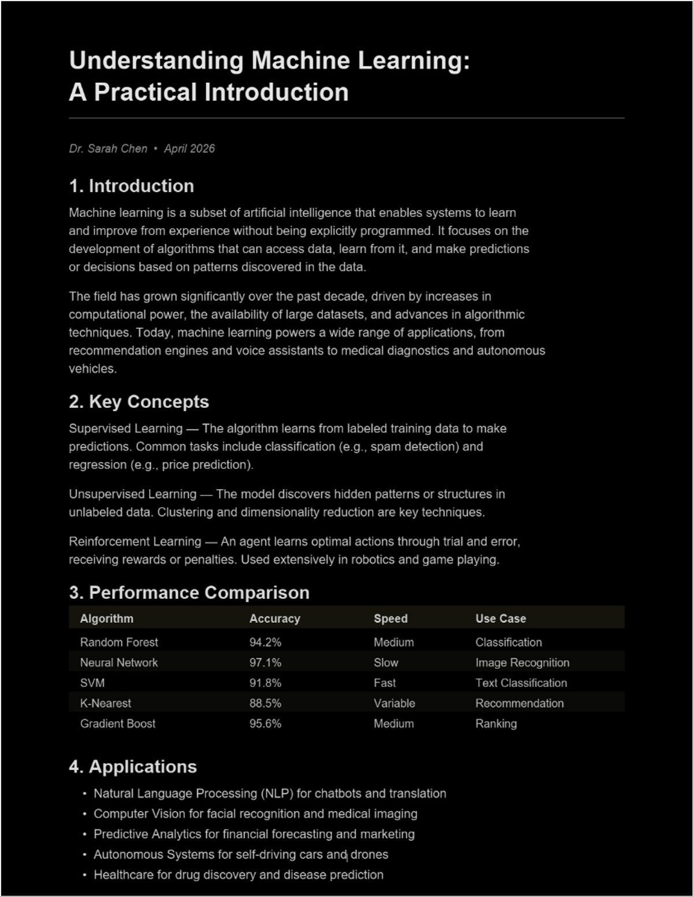
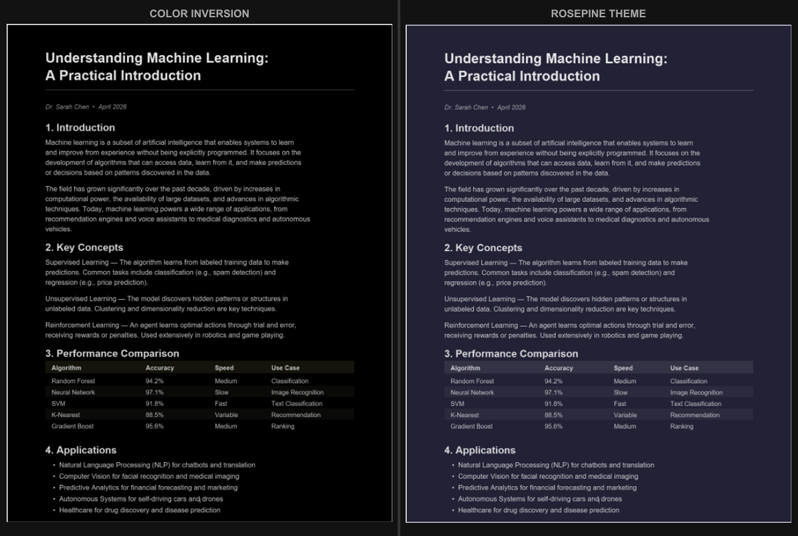

PDF-Farben invertieren: Methoden, die wirklich funktionieren
Schnelle Antwort: Du kannst PDF-Farben über die Barrierefreiheitseinstellungen deines Betriebssystems invertieren (sofort, aber betrifft den gesamten Bildschirm), über integrierte Optionen deines PDF-Readers oder mit dem Tool PDF-Farben invertieren für eine echte Farbinvertierung. Für einen Dunkelmodus mit über 16 Themes zur Auswahl nutze den PDF Dark Mode Converter - alles kostenlos, alles bleibt auf deinem Gerät.
Was bedeutet es, PDF-Farben zu invertieren?
Die Farbinvertierung nimmt jede Farbe eines Bildes und ersetzt sie durch ihr Gegenteil. Weiß wird Schwarz, Schwarz wird Weiß, Blau wird Orange, Rot wird Cyan usw. Angewendet auf ein Standard-PDF (schwarzer Text auf weißem Hintergrund) erzeugt die Invertierung weißen Text auf schwarzem Hintergrund - eine einfache Form des Dunkelmodus.
Die Invertierung ist ein grobes Werkzeug. Sie funktioniert gut für reine Textdokumente, aber sobald dein PDF Fotos, farbige Grafiken, Logos oder Diagramme enthält, wird es problematisch. Ein blaues Balkendiagramm wird orange. Ein Sonnenuntergangsfoto sieht aus wie von einem anderen Planeten. Wenn dein Ziel einfach nur komfortables Lesen ist, gibt es bessere Optionen. Aber wenn du speziell eine echte Farbinvertierung brauchst, funktionieren diese Methoden.
Methode 1: Systemweite Farbinvertierung
Alle großen Betriebssysteme haben eine Barrierefreiheitsfunktion, die die Farben des gesamten Bildschirms invertiert. Das ist der schnellste Weg, ein PDF zu invertieren, da nichts installiert oder konfiguriert werden muss - du musst nur eine Einstellung aktivieren.
Windows:
- Drücke Windows + Strg + I, um die Farbinvertierung sofort ein- und auszuschalten.
- Oder gehe zu Einstellungen > Barrierefreiheit > Farbfilter, aktiviere die Farbfilter und wähle ‘Invertiert".
macOS:
- Gehe zu Systemeinstellungen > Bedienungshilfen > Anzeige und aktiviere ‘Farben umkehren".
- Du kannst ‘Intelligente Umkehrung" verwenden, die versucht, Bilder und Medien in ihren Originalfarben zu belassen und den Rest zu invertieren. Das funktioniert für die meisten PDFs besser als die vollständige Invertierung.
iOS / iPadOS:
- Einstellungen > Bedienungshilfen > Anzeige & Textgröße > Intelligente Umkehrung (oder Klassische Umkehrung).
- Du kannst das auch zum Kurzbefehl für Bedienungshilfen hinzufügen (dreimaliges Drücken der Seitentaste) für schnellen Zugriff.
Android:
- Einstellungen > Bedienungshilfen > Farbumkehr (oder ‘Farbkorrektur" je nach Gerät).
Der Vorteil der systemweiten Invertierung ist die Geschwindigkeit: Sie wirkt sofort und lässt sich per Tastenkombination umschalten. Der Nachteil ist, dass sie alles auf deinem Bildschirm invertiert. Deinen Desktop, Browser-Tabs, E-Mail-Fenster - alles ist invertiert. Du musst sie ausschalten, wenn du fertig bist, und das ständige Hin- und Herschalten kann irritierend sein.
Methode 2: Integrierte Invertierung des PDF-Readers
Einige PDF-Reader haben eine eigene integrierte Farbinvertierung oder einen Dunkelmodus, der nur das PDF betrifft und nicht den gesamten Bildschirm.
Adobe Acrobat Reader: Gehe zu Bearbeiten > Voreinstellungen > Barrierefreiheit, aktiviere ‘Dokumentfarben ersetzen" und wähle ein kontrastreiches Schema. Das ist keine echte Invertierung, aber das Ergebnis ist ähnlich. Schau dir unsere ausführliche Anleitung zum Dunkelmodus in Adobe Acrobat an.
Foxit Reader: Ansicht > Seitenanzeige > Nachtmodus. Das invertiert die Seitenfarben innerhalb des Readers.
KDE Okular (Linux): Einstellungen > Okular einrichten > Barrierefreiheit > Farben ändern. Bietet Optionen für ‘Farben invertieren" und ‘Papierfarbe ändern".
Der Vorteil hier ist, dass nur das PDF betroffen ist, nicht der Rest deines Bildschirms. Aber diese Funktionen sind Reader-spezifisch und nur Anzeigeänderungen: Die PDF-Datei selbst ändert sich nicht. Wenn du sie jemandem sendest, ausdruckst oder auf einem anderen Gerät öffnest, zeigt sie ihre Originalfarben.
Methode 3: Browser-Tricks
Wenn du PDFs in deinem Webbrowser liest, gibt es ein paar Tricks:
- Force Dark Mode Flag in Chrome/Edge: Gib
chrome://flagsoderedge://flagsein, suche nach ‘Force Dark Mode for Web Contents" und aktiviere es. Das versucht, die Farben von Webseiten und PDFs im Browser zu invertieren. Die Ergebnisse variieren stark. Schau dir unsere Anleitungen für Chrome und Edge an. - Browser-Erweiterungen: Erweiterungen wie Dark Reader wenden dunkle Farben auf Webinhalte an, einschließlich PDFs, die im Browser geöffnet sind. Sie funktionieren bei manchen Dokumenten besser als das Force Dark Flag, haben aber weiterhin Probleme mit Bildern und komplexen Layouts.
Methode 4: Das PDF richtig konvertieren
Alle oben genannten Methoden sind temporäre, reine Anzeigelösungen. Sie verändern die PDF-Datei selbst nicht. Wenn du ein wirklich invertiertes PDF willst, ist das Tool PDF-Farben invertieren am schnellsten. Es nutzt standardmäßig eine echte RGB-Komplementinvertierung und läuft vollständig in deinem Browser. Wenn du einen getönten Dunkelmodus mit über 16 Themes zur Auswahl bevorzugst, ist der PDF Dark Mode Converter genau das Richtige.
Der Konverter läuft vollständig in deinem Browser, ohne Dateiupload. Ziehe dein PDF auf die Seite, wähle dein Theme und lade eine neue Version mit transformierten Farben herunter. Das Ergebnis ist eine echte PDF-Datei, die in allen Readern auf allen Geräten dunkel erscheint, ohne jegliche Einstellung oder Schalter.

Im Gegensatz zur einfachen Invertierung bietet der Konverter eine intelligente Farbtransformation. Die Dunkelmodus-Themes passen Text- und Hintergrundfarben an und behandeln Bilder und farbige Elemente sorgfältiger als eine rohe Invertierung. Du kannst auch zwischen warmen Tönen, Sepia, Blaugrau und anderen Themes wählen, die deutlich angenehmer für die Augen sind als die reine Schwarz-Weiß-Invertierung.
Welche Methode solltest du verwenden?
Das hängt von deiner Situation ab:
- Du brauchst es sofort zum schnellen Lesen? Nutze die systemweite Invertierung. Eine Tastenkombination und fertig. Vergiss nicht, sie auszuschalten, wenn du fertig bist. Unter Windows kannst du die Systeminvertierung auch direkt nutzen - schau dir unseren Leitfaden zum PDF-Dunkelmodus unter Windows für mehr Details an.
- Du liest viele PDFs am selben Computer? Richte den integrierten Dunkelmodus oder die Barrierefreiheitsfarben deines PDF-Readers ein. Die Einstellung bleibt zwischen Sitzungen bestehen und betrifft nur PDFs.
- Du möchtest ein dauerhaft dunkles PDF, das du teilen oder überall lesen kannst? Konvertiere es. Das dauert 10 Sekunden und erzeugt eine Datei, die auf allen Geräten funktioniert.
- Du brauchst speziell eine echte Farbinvertierung (keinen Dunkelmodus)? Nutze das Tool PDF-Farben invertieren für ein dauerhaft invertiertes, herunterladbares PDF. Oder nutze die Systeminvertierung für eine schnelle Bildschirmänderung. Für einen detaillierten Vergleich lies unseren Artikel über Dunkelmodus vs. Farben invertieren.

Häufig Gestellte Fragen
Beschädigt die Farbinvertierung mein PDF?
Die system- und readerbasierte Invertierung ändert die Datei überhaupt nicht - sie ist rein visuell. Die Konvertierung mit einem Tool erstellt eine neue Datei mit neuen Farben; deine Originaldatei bleibt unverändert.
Warum sehen Bilder nach der Invertierung seltsam aus?
Die Invertierung verwandelt jede Farbe in ihr Gegenteil. Ein Foto eines grünen Waldes wird zu einem magentafarbenen Desaster. Das ist die grundlegende Einschränkung der Invertierung im Vergleich zur intelligenten Dunkelmodus-Konvertierung.
Kann ich ein PDF invertieren, um Druckertinte zu sparen?
Wenn du ein PDF mit dunklem Hintergrund hast und es zum Drucken aufhellen möchtest, ja. Schau dir unseren Leitfaden zum PDF invertieren zum Drucken an.
Echte Farbinvertierung gesucht? PDF-Farben invertieren - sofort, dauerhaft, privat.
Lieber Dunkelmodus mit über 16 Themes? PDF Dark Mode Converter - GPU-beschleunigt, komplett kostenlos.
Häufig Gestellte Fragen
Farben invertieren ersetzt jede Farbe durch ihr Gegenteil. Weiß wird Schwarz, Schwarz wird Weiß und alle anderen Farben wechseln zu ihren Komplementärwerten.
Ja, die Invertierung ändert alle Farben einschließlich der Bilder, wodurch Fotos wie Negative aussehen. Die Dunkelmodus-Konvertierung geht sorgfältiger mit Bildern um als eine einfache Invertierung.
Ja. Der PDF Dark Mode Converter erstellt eine neue PDF-Datei mit dauerhaft transformierten Farben. Deine Originaldatei bleibt unverändert.